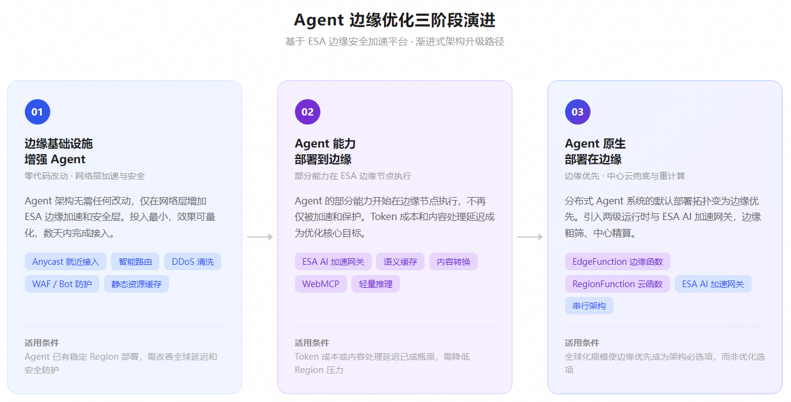
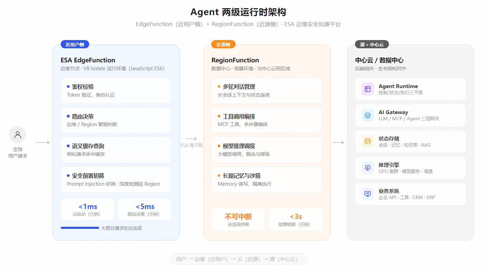

第 24 章 Agent 边缘运行时与全球优化¶
Agent 在 Region 内通过评估、仿真和持续优化达到生产标准后，全球化部署带来了一个新的优化维度，即用户分布在全球各地，流量从边缘进入，威胁在边缘发起，内容需要在边缘适配。Region 内成熟的调优体系可以进一步延伸到这些场景，让优化能力从 Region 扩展到离用户最近的边缘。Agentic Application 的参考架构中，Runtime 组件覆盖了 Region 内的执行基础设施——计算资源、网络、存储和沙箱隔离。本章将 Runtime 延伸到全球边缘，引入边缘优化维度，覆盖从 Agent 到用户之间的最后一公里。本章所描述的边缘优化能力，由阿里云边缘安全加速（ESA）平台提供基础设施支撑——ESA 在全球运营 3200+ 边缘节点，覆盖主要国家和地区的用户接入，具备就近接入、边缘计算和安全防护的一体化能力，是将调优体系从 Region 延伸到边缘的天然载体。
24.1 全球化场景的边缘优化维度¶
四个边缘优化方向¶
-
延迟不对称： Agent 端到端延迟可拆解为七个因素：排队、环境准备、模型推理、工具调用、网络传输、沙箱执行和人工等待。其中六个因素在 Region 内产生，只有网络传输由物理距离决定。一个部署在某个 Region 的 Agent，为跨洋用户提供推理服务时，网络传输在首 Token 延迟（TTFT）中的占比可能超过 40%（示例场景假设，需企业基线校准）——模型推理速度再快，也无法补偿这一物理瓶颈。边缘优化精准命中网络传输因素，在全球就近接入和传输加速两个层面补全端到端的延迟观测。
-
成本不透明： Agent 的 Token 成本、回源带宽成本和边缘请求成本分散在不同计费体系中。没有边缘层的统一计量和缓存优化，企业很难知道一次 Agent 调用的真实端到端成本，也无法通过语义缓存等手段降低重复推理的 Token 消耗。
-
安全前置： 红队测试和安全治理为 Agent 在 Region 内建立了完善的安全评估体系。边缘安全在此基础上进一步将防线前置——DDoS 攻击在边缘吸收清洗，Bot 爬虫在边缘识别拦截，Prompt Injection 在到达 Region 之前完成前置识别与初筛（间接注入等深层攻击仍需 Region 结合完整上下文检测），让安全从 Region 入口前移到网络边缘。
-
内容适配：工程化治理体系为 Prompt/Skill/Context 建立了完善的版本管理和发布流程。边缘内容分发在此基础上进一步优化——Agent 消费的大量 Web 外部内容，在边缘节点完成 HTML 转 Markdown 等格式转换（ESA 已发布能力），让 Agent 以原 URL 直接取到可消费形态，减少二次处理的延迟和 Token 消耗。
中心云调优与边缘调优的分工¶
Region 级调优与边缘调优解决不同层次的问题，两者分层协作：
| 维度 | Region 级调优 | 边缘调优（本章） |
|---|---|---|
| 正确性 | Agent 的任务是否完成、结果是否正确 | — |
| 延迟 | 模型推理延迟、工具调用延迟 | 网络传输延迟、全球就近接入 |
| 成本 | Token 单价、模型路由成本 | 重复推理的缓存、回源带宽 |
| 安全 | Agent 行为安全、数据访问控制 | 请求到达 Region 之前的威胁拦截 |
| 内容 | Prompt/Skill/Context 的版本管理 | 外部内容的边缘转换与分发 |
| 体验 | 任务完成度、结果质量 | 全球一致性体验、区域化适配 |
分工原则是：边缘能处理的（缓存命中、安全拦截、就近路由），就不回源 Region；边缘处理不了的（复杂推理、状态变更、长任务执行），才进入 Region。判断“能处理”不能只看计算能力，还要看事实权威、身份与权限、写副作用、数据驻留和故障恢复语义，只有无需权威状态判定、无需写副作用、且符合数据驻留要求的请求才适合在边缘就地完成；涉及一致性、顺序和恢复语义的操作必须回到 Region 执行。
24.2 边缘评估：衡量 Agent 的全球交付质量¶
评估体系在 Region 内已建立了完善的框架：回答质量评估、轨迹评估、工具评估、任务状态验证。边缘评估在此基础上进一步扩展——将全球用户的实际交付质量纳入评估体系。同一个 Agent 为东京用户提供服务的 TTFT 可能是 200ms，为圣保罗用户可能是 1200ms（示例场景假设，需企业基线校准），这种全球体验差异需要边缘维度的评估指标来衡量。
边缘评估指标体系¶
边缘评估指标从四个维度扩展 Region 内的评估体系。性能维度关注全球各区域的 TTFT（P50/P95/P99）、边缘到 Region 的传输延迟和长连接建立时间——这是延迟指标在空间维度上的直接延伸。成本维度追踪端到端调用成本（Token + 带宽 + 边缘请求费用）、语义缓存节省量和回源流量占比，让企业对每次 Agent 调用的真实全链路成本有完整认知。安全维度衡量边缘拦截率、DDoS 吸收量、Prompt Injection 检出率和 Bot 识别准确率，反映安全防线前置的效果。体验维度通过区域体验一致性评分、流式输出完整性和断连恢复成功率，衡量全球用户的体验均等程度。
边缘评估数据回流¶
边缘评估产生的指标数据通过统一的数据管道回流到 Region 内的评估体系中，与 Region 内的评估数据合并，形成 Agent 的"全球交付质量报告"。Agent Release 的准入基线应同时包含 Region 内指标和边缘指标——一个版本如果在全球 P95 延迟上未达标，即使 Region 内评估全部通过，也不应被发布。
24.3 边缘性能与成本优化¶
全球就近接入与智能路由¶
ESA 的全球 Anycast 接入使用户请求被路由到最近的边缘节点，减少首跳延迟。ESA 边缘节点之间通过骨干网互联，智能路由算法根据实时网络状况选择最优路径。对于 Agent 场景，长连接优化（连接池复用、首窗参数调优）和缓冲策略（异步路由、流式转发）对降低 TTFT 尤其重要。当 Agent 系统部署在多个 Region 时，边缘网关根据延迟、成本、合规和当前负载动态选择目标 Region。
AI 推理传输优化¶
Agent 的推理请求具有长连接、流式输出、大 Payload 的特征。边缘节点在四个层面做定向优化：协议栈首窗与区域化参数调优、长连接池复用、缓冲与异步路由减少回源等待、DSCP（差异化服务代码点，用于 IP 报文优先级标记）专线选路保障高优先级流量的传输质量。
语义缓存与回源卸载¶
Agent 的大量请求具有语义相似性——不同用户问相似的问题，同一用户在不同时间重复相似的查询。语义缓存在边缘节点存储已有推理结果的摘要和答案，当新请求与缓存项的语义相似度超过阈值时直接返回缓存结果，节省 Token 消耗。语义缓存应限定在公开、幂等、低风险请求范围内，并把租户、权限域、地区、模型、Prompt 和知识版本纳入缓存键，定义 TTL（生存时间）、失效、来源标记和回源策略，避免跨租户泄露、越权、版本陈旧和个性化答案误命中。高频查询场景下，边缘缓存可以显著卸载回源流量，对应可观的 Token 成本节省。
成本评估指标： Token 节省量（缓存命中节省的 Token 数）、回源带宽减少比例、端到端调用成本变化、缓存命中率随时间的变化趋势。
24.4 边缘数据驱动持续优化¶
Agent 上线后，全球用户的真实使用过程是持续优化的重要数据来源。
ESA 边缘节点位于用户访问的第一跳，能够直接观察用户所在区域、网络状况、访问时延、缓存命中情况和安全风险。这些边缘观测数据为 Agent 平台的持续优化提供了真实、全球分布的信号来源——Region 内的运行日志记录了模型生成了什么、调用了哪个工具、返回了什么结果，边缘数据则补充了请求发生时的外部环境。将两类数据结合，Agent 平台不仅能看到问题，还能判断问题更可能来自模型指令（Prompt）、工具能力（Skill）、网络路由、缓存还是安全策略。
边缘数据为优化提供什么¶
ESA 边缘节点能够持续采集全球各区域的运行数据，供 Agent 平台用于发现优化机会。同一个 Agent 在不同区域、网络和用户群体中，可能呈现完全不同的运行效果。边缘数据将这些差异暴露出来，帮助 Agent 平台识别重复出现的问题模式。
| 从边缘数据中观察到的现象 | 可能说明的问题 | Agent 平台可以采取的优化 |
|---|---|---|
| 某些区域响应明显更慢 | 当前服务节点并非当地最优选择 | 调整模型与服务路由 |
| 某个工具只在部分区域频繁超时 | 工具可达性或网络链路存在区域差异 | 调整工具路由、超时和重试策略 |
| 缓存命中率在某些区域明显偏低 | 缓存策略与该区域请求模式不匹配 | 调整缓存键和 TTL 策略 |
| 新型安全威胁在多个节点被拦截 | 攻击方式发生变化，防护规则需要更新 | 更新安全策略和拦截规则 |
| 回源流量占比持续偏高 | 缓存策略或路由配置未有效卸载流量 | 调整缓存策略和回源规则 |
这些现象单独看只是运行记录，经过聚合与关联分析后，才会成为优化依据。例如，某个工具在多个区域都失败，问题可能出在 Skill 本身；如果只在一个区域失败，更可能是网络或服务路由问题。前者需要修改 Skill，后者则应调整运行编排层（Harness）中的路由策略。边缘数据帮助 Agent 平台避免"看到失败就修改 Prompt"这类错误归因。
优化闭环中 ESA 与 Agent 平台的职责分工¶
受控自进化闭环（记录、分析、修改、验证、回流）由 Agent 平台和团队共同完成，ESA 的角色是提供边缘观测数据：
ESA 提供：
边缘 Trace 数据：请求时延、缓存命中、安全拦截等基础设施层观测
全球区域维度的差异化数据：不同区域的延迟分布、网络状况、威胁模式
版本管理与灰度发布：支持 Agent 平台在边缘侧受控验证新策略
Agent 平台完成：
分析：将边缘 Trace 与 Region 内的模型输出、工具调用结果、任务完成情况关联分析，判断问题来自哪个环节
修改：由团队基于分析结果生成优化策略，例如修改 Prompt、更新 Skill、调整模型路由或缓存策略
验证：在小范围内灰度验证 Patch 效果，观察任务成功率、响应质量、时延、成本和安全指标
回流：验证结果进入下一轮优化，形成持续改进闭环
以区域性工具超时为例：ESA 边缘数据发现某一区域的工具调用失败明显增多；Agent 平台将其与其他区域对比，确认模型和 Skill 本身没有变化，问题集中在网络链路；Agent 平台据此生成路由策略 Patch，利用 ESA 版本管理的灰度环境在该区域的小部分流量中验证，通过调用成功率和时延判断是否改善，再决定是否扩大范围。
这里的"自进化"由平台辅助数据分析，团队生成候选策略，并经过规则校验、人工审核或自动化评测后再灰度发布。原始数据还需遵循最小化采集、匿名化、访问控制和跨区域合规要求，确保优化能力建立在可治理的数据使用之上。
从统一能力走向全球差异化优化¶
不同区域的网络质量、可用模型、工具服务、用户习惯、安全风险和合规要求各不相同，统一配置虽然便于管理，却很难在所有区域同时获得最优效果。
更合理的方式是采用"全球统一基线 + 区域自适应策略"。Prompt、核心 Skill 和基础安全规则由全球统一治理，保证 Agent 的基本能力和行为一致；模型路由、服务节点、缓存、安全规则和工具调用策略，则可以根据各区域的真实流量进行调整。
ESA 边缘节点持续提供各区域的运行数据，Agent 平台辅助团队完成跨区域比较、问题定位和优化方向判断。这样既能避免各区域独立演进造成能力割裂，也能让 Agent 适应不同市场的实际运行环境。
24.5 边缘内容分发：让 Skill/Context 到达全球边缘¶
工程化治理在 Region 内已建立了 Prompt/Skill/Context 的版本管理、变更评审和发布流程。在此基础上，边缘内容分发进一步解决全球化场景下的分发问题——当 Agent 在全球多个 Region 或边缘节点运行时，能力资产的版本需要在所有执行点保持一致。如果一个边缘节点运行的是 Skill v1.2 而 Region 内已经是 v1.3，就会产生行为不一致和评估偏差。
边缘版本同步与就近读取¶
Prompt/Skill/Context 发布后，通过全球分发机制同步到各边缘执行点（企业自建能力，可基于 ESA 边缘计算实现）。Agent 在边缘执行时就近读取这些资产，减少回源延迟。版本同步需要与变更评审流程联动——每次 Skill 发布触发边缘缓存刷新，并通过版本钉扎和激活协议明确各执行点当前生效的版本，避免并发写和断网降级下的版本漂移。
区域适配¶
不同地区的 Agent 可能需要差异化的 Context 策略——语言偏好、合规要求、本地化知识库因地域而异。这里需要区分两种“一致性”：治理规则全球一致（版本管理、变更评审、发布流程统一），数据分布按驻留要求差异化（分类分级、脱敏、授权、驻留、保留和删除机制按区域合规执行）。边缘分发支持按区域配置 Context 变体，在统一治理规则的基础上实现区域化适配。
Agent 友好内容转换¶
Agent 需要消费大量 Web 内容作为上下文。传统边缘网络以原始 HTML 形态回送内容，Agent 拿到后还需要解析和结构化。边缘节点在内容送达 Agent 之前完成格式转换——HTML 转 Markdown 是 ESA 已发布能力，摘要生成和向量化索引可作为企业参考实现——Agent 以原 URL 直接取到可消费形态，减少二次处理延迟和 Token 消耗。
WebMCP：网站即 MCP Server¶
WebMCP 是一项处于早期提案和浏览器试验阶段的技术，让网站可以主动向 Agent 暴露可调用的 MCP 工具：网站通过 JavaScript API 或声明式 HTML 注册工具，Agent 不再需要视觉解析网页，而是通过结构化接口直接调用网站功能。人工确认是其中一种可用的授权机制，但并非所有支付、删除操作的统一强制规范。该技术尚属实验性，本节仅作前瞻性介绍。
WebMCP 的核心价值在于重新定义 Agent 与 Web 的交互方式——从视觉解析转向结构化调用，降低 Agent 获取 Web 内容的成本和延迟。
24.6 边缘安全：请求到达 Region 之前的第一道防线¶
前文的安全治理为 Agent 建立了全栈安全保护框架，覆盖应用安全、模型安全、数据安全、身份安全和系统网络安全五个层面，采用纵深防御策略。ESA 的边缘安全能力在此基础上将纵深防御的多道防线推进到网络边缘——DDoS 攻击在边缘吸收清洗，避免流量到达 Region 时才消耗带宽；Bot 爬虫在边缘识别拦截，减少无效请求的回源开销；模型安全层面的 Prompt Injection 防护也被前置到边缘 AI 护栏中，在语义攻击到达 Region 之前完成前置识别与初筛。边缘只能覆盖直接注入，检索内容、工具返回等间接注入仍需 Region 结合完整上下文执行检测与审计。
纵深安全的前置¶
边缘节点完成三层安全过滤：
-
网络层：DDoS 流量在边缘吸收清洗，只有合法流量进入回源链路
-
应用层：WAF（Web 应用防火墙）/Bot 管理识别传统 Web 攻击（SQL 注入、XSS 跨站脚本）和恶意爬虫
-
语义层：AI 护栏检测 Prompt Injection、越狱尝试、不合规内容、敏感数据泄露
AI 护栏与 WAF 的职责不同：WAF 侧重已知签名与规则的请求层攻击防护，AI 护栏侧重模型交互层面的攻击检测（“忽略之前的指令”、间接注入、角色扮演越狱）。两者在边缘协同运行，但边缘只能完成前置初筛，深层检测在 Region 完成。
AI 爬虫管理¶
当网站的访问者从人类扩展到 AI Agent，ESA 提供 AI 爬虫生命周期管理：AI 爬虫管理（支持识别、观察和拦截 AI 爬虫）→ AI Bot Auth（身份认证，区分合法 Agent 和恶意爬虫）→ AI Crawl Control（精细管控，允许/限制/拒绝特定 Agent 的访问）→ Pay Per Crawl（将 AI 访问转化为客户的收益流）。这是 Agent 时代的新型商业模式。
边缘安全与 Region 安全的分层协作¶
边缘安全负责"过滤"（拦截已知威胁、吸收攻击流量），Region 内安全负责"判断"（复杂的权限校验、行为分析、审计追踪）。两者通过安全事件共享联动——边缘拦截的攻击模式同步到 Region 内的安全策略引擎，Region 内发现的新型威胁规则下发到边缘节点。
24.7 边缘生产验证：用真实全球流量验证 Agent 行为¶
仿真体系在 Region 内已建立了完整的框架，包含 Scenario Spec（场景定义规范）、User Simulation（用户行为模拟）、Environment Simulation（工具和网络环境模拟）和 Model Provider Replay（模型输出回放）四种核心仿真能力。仿真的本质是用合成数据测试 Agent 在假设场景下的行为，覆盖真实流量难以触达的边界和长尾场景。
ESA 边缘节点提供了与仿真互补的另一种验证路径：用真实全球流量观察 Agent 上线后的实际表现。仿真回答的是"如果发生 X，Agent 会怎样"；边缘生产验证回答的是"全球真实用户实际发生了什么，Agent 表现如何"。两者共同构成 Agent 版本发布前后的完整验证闭环——仿真负责上线前的合成测试，边缘生产验证负责上线后的真实观测。
边缘真实流量的观测能力¶
ESA 边缘节点位于用户访问的第一跳，能够直接观察全球各区域的真实运行情况：
请求分布：地域占比、高峰时段、请求路径偏好，反映全球用户实际使用模式
网络状况：端到端延迟、丢包率、连接中断频率和长连接稳定性，反映各区域真实网络环境
安全态势：DDoS 攻击模式、Bot 爬虫行为、Prompt Injection 实际检出情况，反映真实威胁分布
缓存效果：语义缓存命中率、回源流量占比，反映缓存策略在真实流量下的实际效果
ESA 边缘节点记录的是全球真实用户在生产环境中的实际表现。例如，边缘节点能观察到东南亚区域实际有多少用户遇到了网络中断、恢复策略实际表现如何、缓存命中率是否达到预期。
边缘生产验证与仿真的互补关系¶
边缘生产验证与仿真在验证 Agent 行为时各有侧重：
| 维度 | 仿真（上线前） | 边缘生产验证（上线后） |
|---|---|---|
| 数据来源 | 合成场景、模拟用户 | 全球真实用户请求 |
| 覆盖范围 | 边界和长尾场景 | 主流场景和真实分布 |
| 网络条件 | 模拟的延迟/丢包参数 | 各区域实际网络状况 |
| 安全威胁 | 红队构造的攻击样本 | 真实攻击流量和模式 |
| 验证目的 | Agent 是否能应对假设场景 | Agent 在真实环境中表现如何 |
两者互补的典型场景：仿真验证 Agent 能处理 3 秒超时的弱网场景后，版本发布上线；边缘生产验证发现东南亚区域实际有 5% 的请求遭遇超过 5 秒的延迟，导致 Agent 流式输出中断率高于预期。此时可以回到仿真体系，用边缘观测到的真实网络参数补充新的测试场景，形成"仿真 → 上线 → 边缘验证 → 回流仿真"的闭环。
边缘灰度发布与版本管理¶
ESA 提供站点级版本管理能力，支持开发、灰度、生产三套环境。每个版本基于现有配置克隆生成，可以先在开发环境测试，再提升到灰度环境按请求规则导入部分流量验证，最终提升到生产环境全量生效。版本支持切换和回滚，异常时可以快速回退到上一版本。
这一能力使边缘生产验证不仅限于观测，还能在真实流量上执行受控的版本验证。新版本的缓存规则、安全策略或路由配置先在灰度环境对部分真实流量生效，边缘节点持续观察任务成功率、响应时延、缓存命中率和安全拦截率等指标。验证通过后提升到生产环境全量发布；如果指标异常，直接回滚到上一版本。整个过程中，真实流量既是验证对象，也是真实流量既是验证对象，也是 Agent 平台判断版本是否达到发布标准的依据。
验证结果的边缘-Region 联合评估¶
Agent 版本发布的准入基线应同时包含 Region 内指标（回答正确率、任务完成率）和边缘指标（全球延迟分布、缓存命中率、安全拦截率）。一个版本如果在全球 P95 延迟或边缘缓存命中率上未达标，即使 Region 内仿真全部通过，也不应被发布。Agent 平台基于这些数据判断版本是否达到发布标准。边缘生产验证将发布准入从 Region 内扩展到全球维度。
24.8 三阶段演进与企业成熟度模型¶
企业不需要从第一天就建设完整的边缘优化体系。根据 Agent 业务的全球化程度和边缘能力成熟度，可以分为三个阶段渐进演进。

图24-1 Agent 边缘优化三阶段演进
阶段一：边缘基础设施增强 Agent¶
最小侵入的优化阶段。Agent 的业务代码基本不变，只需调整网络接入配置，在网络层增加一个 ESA 边缘加速和安全层。这是大多数企业应该首先考虑的阶段——投入最小，效果可量化。
具体能力包括：Anycast 就近接入（用户请求自动路由到最近的边缘节点）、智能路由（边缘节点之间通过骨干网互联，根据实时网络状况选择最优回源路径）、DDoS 清洗（攻击流量在边缘吸收，只有合法流量进入回源链路）、WAF/Bot 防护（SQL 注入、XSS、恶意爬虫在边缘拦截）、静态资源缓存和 SSL 卸载。
实施路径通常分四步：ESA 接入与 DNS 切换→全球基线延迟测量→重点区域效果验证→全球生效。整个过程通常只需数天（示例评估，实际周期取决于企业现有架构与配置复杂度），不影响 Agent 的任何业务逻辑。
适用条件：Agent 已有稳定的 Region 部署，需要改善全球延迟和安全防护，但不想改动应用架构。
评估指标：全球 P50/P95 延迟改善比例、边缘安全拦截率、回源带宽减少量。
阶段二：Agent 能力部署到边缘¶
部分 Agent 能力开始在 ESA 边缘节点执行，而不仅仅是被加速和保护。具体能力包括：ESA AI 加速网关（已发布，语义缓存、模型路由、Token 计量在边缘完成，具体命中策略为企业参考实现）、Agent 友好内容转换（HTML→Markdown、向量化等为企业参考实现）、WebMCP（实验性技术）、轻量推理（边缘节点运行小型模型完成预处理或分类）。
适用条件：Agent 的 Token 成本或内容处理延迟已成为瓶颈，需要通过边缘缓存和预处理降低 Region 压力。
评估指标：语义缓存命中率、Token 节省量、内容转换延迟、边缘处理的请求占比。
阶段三：Agent 原生部署在边缘¶
终态愿景。分布式 Agent 系统的默认部署拓扑是边缘优先，中心云做兜底和重计算。这个阶段的核心架构变化是引入 Agent 两级运行时和边缘 AI 加速网关，从调优视角重构 Agent 的全球执行拓扑。

图24-2 Agent 两级运行时架构（本书参考架构与愿景设计）
Agent 两级运行时：ESA EdgeFunction + RegionFunction。
Agent Runtime 的三平面架构（控制/状态/执行）为边缘部署提供了基础，分布式部署进一步解决了 Agent 从单机走向多 Region 的问题——部署拓扑从单 Region 集中式演进到多 Region 主备，再到多 Region 多活。阶段三在此基础上迈出下一步：从“多 Region”演进到“边缘优先”。“逻辑单例、物理可替换”原则和状态外置设计天然适配边缘架构——边缘函数是轻量化的执行实例，云函数是完整的逻辑单例，两者通过状态外置保持行为一致。状态外置需要配套权威源、版本钉扎、激活协议、并发写控制、断网降级和回滚规则，才能保证边缘与 Region 行为真正一致。
-
EdgeFunction（边缘函数，近用户侧部署）：由 ESA 边缘计算平台承载，部署在离用户最近的边缘节点上，处理对延迟敏感的前置逻辑——鉴权校验、路由决策、请求改写、缓存查询、安全过滤。ESA 边缘函数基于 V8 Isolate 的 JavaScript 运行环境（当前支持 JavaScript ES6），提供轻量级进程隔离，用户请求在“第一跳”即可完成处理，无需跨越网络回到数据中心。
-
RegionFunction（云函数，近源侧部署）：部署在离源站更近的 ESA 节点中，处理需要持久状态和深度计算的 Agent 逻辑——多轮对话上下文管理、工具调用编排、模型推理调度、长期记忆读写、沙箱隔离执行。云函数紧邻模型服务、数据库和业务系统，适合对计算资源和数据访问要求更高的重型任务。
两级架构的核心思路是：不是所有 Agent 请求都需要回到数据中心处理。 以一个典型的客服 Agent 为例，大量请求可以通过边缘缓存命中、简单路由或轻量预处理在用户侧就近完成，只有涉及复杂推理和深度工具调用的请求才需要进入数据中心。两级运行时让大部分请求在边缘完成，大幅降低全球用户的端到端延迟，同时减少数据中心侧的计算压力。
以一个具体场景说明两级架构的运行方式。一位西班牙语用户向客服 Agent 询问退货政策，请求到达最近的边缘节点（马德里）。EdgeFunction 首先完成鉴权和请求预处理，然后在语义缓存中查找——该用户所在地区此前已有多次类似查询，缓存命中，边缘直接返回已缓存的退货政策摘要，整个过程延迟不到 50ms（示例场景假设，需企业基线校准）。如果用户追问一个从未出现过的复杂问题（缓存未命中），EdgeFunction 将请求连同预处理结果一起转发到数据中心的 RegionFunction，由后者完成完整的多轮推理、工具调用和订单查询，结果再写回边缘缓存供后续相似查询使用。
两级运行时的关键调优指标：
| 指标 | 含义 | 优化目标 |
|---|---|---|
| 边缘处理比例 | 在 EdgeFunction 层完成的请求占比 | 按任务风险与业务 SLO 设置目标，正确性优先，而非单一最大化 |
| EdgeFunction 冷启动时间 | 边缘函数从加载到可执行的时间 | <1ms（示例目标） |
| 路由决策延迟 | EdgeFunction 判断请求走边缘还是 Region 的时间 | <5ms（示例目标） |
| RegionFunction 会话保持率 | 长会话 Agent 在 Region 内的状态连续性 | 不可中断 |
| 边缘-Region 故障转移时间 | 边缘节点不可用时切换到 Region 或相邻边缘的时间 | <3s（示例目标） |
以上指标为架构示例目标，并非 ESA 产品现状指标，企业应根据自身基线和压测结果校准。
ESA AI 加速网关：面向 AI 流量的边缘网关。
ESA AI 加速网关是基于边缘接入特性构建的 AI 网关，与中心 AI 网关的定位和目标场景不同。本质上，这是部署差异带来的使用特性区别：中心 AI 网关部署在 Region 内，ESA AI 加速网关则部署在遍布全球的边缘节点上。基于 ESA 的边缘特征，AI 加速网关更多用于全球服务的业务场景——AI 流量从离用户最近的边缘节点进入并就地完成治理。
ESA AI 加速网关提供了在边缘的独特能力：
| 处理环节 | 能力 |
|---|---|
| 缓存 | 语义缓存：相似请求的边缘命中，节省 Token |
| 传输 | 长连接加速：协议栈调优、流式转发、首窗优化 |
| 内容 | HTML→Markdown 转换：大幅减少 Agent 消费 Web 内容时的 Token 消耗 |
| 计量 | 边缘 Token 预估和请求计数 |
| 过滤 | AI 护栏前置过滤：拦截明显违规请求 |
| 调度 | 高 QPS（每秒请求数）调度：边缘层吸收流量峰值 |
边缘 AI 加速网关的独特价值来自边缘接入的位置特性：请求在第一跳完成缓存查询、格式转换、传输优化与安全过滤，缓存命中直接返回，未命中再回源 Region，全球用户都能获得一致的低延迟体验。能力边界也需要明确：语义缓存只覆盖公开、幂等、低风险请求，涉及写副作用和权威状态的请求仍需回到 Region 内执行，以保证正确性与一致性。
ESA AI 加速网关的关键调优指标： Token 节省率（HTML→MD 转换 + 语义缓存的综合效果）、边缘缓存命中率、长连接加速带来的 TTFT 改善、边缘过滤拦截率（违规请求在回源之前被拦截的比例）。
阶段三的适用条件和评估体系：
适用条件：Agent 的全球化规模和延迟要求使得边缘优先成为架构必选项，而非优化选项。典型信号包括：需要为每个区域独立部署完整 Agent 系统且运维成本不可控、全球 TTFT 中网络传输占比超过 30%（示例场景假设，需企业基线校准）、Token 成本随用户增长线性上升且无有效缓存手段。
评估指标：边缘处理的 Agent 请求占比、全球 Agent 可用性（SLA，服务等级协议）、边缘-Region 故障转移成功率、端到端 TTFT 改善幅度、Token 成本节省率。
三个阶段的关系与"选择最低充分架构"原则一致——边缘优化同样不追求最高阶段，而是根据业务的全球化程度选择成本与收益最优的阶段。大多数企业长期停留在阶段一或阶段二即可获得显著收益，只有全球化规模达到一定量级后，阶段三才成为架构必选项。
企业边缘优化成熟度模型（本书归纳，供企业自评参考）¶
| 成熟度 | 边缘优化能力 | 与调优体系的集成度 | 典型表现 |
|---|---|---|---|
| L1 | 无边缘优化，Agent 直连 Region | 无 | 全球延迟差异大，安全依赖 Region 内防护 |
| L2 | 接入边缘加速与安全，独立看板 | 未进入评估闭环 | 延迟改善但无法量化 ROI（投资回报率），安全规则手动维护 |
| L3 | 边缘指标纳入 Agent Release 准入基线 | 评估闭环（与评估体系衔接） | 版本发布需通过边缘性能回归，缓存策略与 Agent 版本绑定 |
| L4 | 边缘数据驱动自进化 | 全自动闭环（与自进化闭环衔接） | 缓存/路由/安全策略根据边缘 Trace 自动优化，经灰度验证后生效 |
成熟度不是越高越好。L1 适合仅在单一区域运营的企业；L2 适合全球化初期；L3 适合 Agent 进入生产后需要严格质量门禁的阶段；L4 适合大规模全球化运营。这一模型在演进方向上与部署成熟度模型（M1-M5）大致呼应——边缘优化是部署成熟度演进到高级阶段后的自然需求——但两者并不存在一一对应的映射关系，每级能力应有可验证的门槛，而非仅凭定性描述。
企业如何判断自己处于哪个阶段：
| 信号 | 阶段判断 |
|---|---|
| 全球用户抱怨延迟高，但 Region 内指标正常 | 需要阶段一 |
| Token 成本随用户增长线性上升，无明显缓存效果 | 需要阶段二 |
| 需要为每个区域独立部署完整 Agent 系统，运维成本不可控 | 需要阶段三 |
| 当前只在单一 Region 运行，用户主要在同一区域 | 暂不需要边缘优化 |
24.9 能力状态、边界与企业决策¶
本章涉及的技术与产品能力处于不同成熟阶段，统一标注如下。
能力状态矩阵¶
| 能力 | 状态 | 说明 |
|---|---|---|
| Anycast 就近接入、智能路由 | ESA 已发布 | 用户请求路由到最近边缘节点，按实时网络状况选路 |
| 边缘节点骨干网互联、DSCP 专线选路 | ESA 已发布 | 保障回源与高优先级流量的传输质量 |
| DDoS 清洗、WAF/Bot 防护 | ESA 已发布 | 攻击流量在边缘吸收，传统 Web 攻击边缘拦截 |
| AI 护栏前置过滤 | ESA 已发布 | 边缘完成直接注入的前置识别与初筛，深层检测在 Region |
| HTML→Markdown 转换 | ESA 已发布 | 减少 Agent 消费 Web 内容的 Token 消耗 |
| AI 爬虫管理 | ESA 已发布 | 识别、观察和拦截 AI 爬虫 |
| AI Bot Auth、AI Crawl Control、Pay Per Crawl | ESA 已发布 | AI 爬虫生命周期管理的后续能力 |
| Agent 两级运行时 | 本书参考架构与愿景设计 | 非 ESA 产品现状 |
| 语义缓存命中策略与缓存键设计 | 企业参考实现 | ESA AI 网关提供基础缓存能力，本章的缓存键、TTL 与回源策略为设计建议 |
| WebMCP | 实验性技术 | 试验阶段 |
| 版本管理与灰度发布 | ESA 已发布 | 边缘生产验证 |
边缘优化的限制与不适用场景¶
边缘优化并非适用所有业务，以下场景需要审慎评估。
单区域业务。用户集中在同一区域、与 Region 物理距离近的企业，边缘优化带来的延迟收益有限，投入可能不成比例。
严格数据驻留要求。不允许跨区域缓存复制或要求数据不出特定司法辖区的场景，语义缓存与全球分发需要按区域合规配置，甚至放弃边缘缓存。
高正确性风险的回答。个性化强、权限敏感、时效性高的内容不应进入语义缓存，否则可能造成错误答案误命中。
边缘算力受限。复杂推理、长任务、大上下文处理仍需回源，边缘只承担预处理和粗筛。
区域能力差异。不同区域的边缘节点能力、可用模型和合规要求不同，全球统一策略需要按区域适配，无法一刀切。
成本反转。流量规模小或缓存命中率低时，边缘层的额外成本可能超过收益，此时阶段一甚至“不优化”才是正确选择。
企业决策建议¶
企业应基于自身全球化程度、数据驻留要求、请求分布和成本结构，选择阶段一、阶段二或阶段三，并设定与业务 SLO 匹配的指标目标。本章出现的所有性能数字均为示例场景假设或架构示例目标，正式实施前必须由企业基线和压测校准。
24.10 本章小结¶
调优篇在 Region 内构建了从评估、自进化、工程化治理、安全到仿真的完整优化闭环。当 Agent 的用户从单一区域扩展到全球，这个闭环需要进一步在空间维度上延伸——让 Region 内已经成熟的调优能力覆盖到边缘，到达离用户最近的位置。
边缘优化是现有调优框架在空间维度上的延伸——评估体系扩展到边缘交付质量，自进化闭环扩展到边缘流量信号，工程化治理扩展到边缘分发，安全评估扩展到边缘攻击面，边缘生产验证补充仿真覆盖。ESA 边缘安全加速平台提供了执行这些延伸的基础设施能力，让调优从 Region 走到用户端，补全了调优体系的最后一公里。
从 Region 到 Edge 的优化是一个渐进过程：先用 ESA 边缘基础设施增强 Agent（阶段一），再将部分能力部署到 ESA 边缘（阶段二），最终通过 Agent 两级运行时（ESA EdgeFunction + RegionFunction）和 ESA AI 加速网关让 Agent 原生运行在边缘（阶段三）。阶段三的核心洞察是：大多数 Agent 请求并不需要完整的 Region 级计算资源，边缘处理、按需回源的架构可以在不改变 Agent 核心逻辑的前提下，系统性地改善全球用户的延迟、成本和体验。每个阶段都有对应的评估指标和成熟度标准，企业应根据自身的全球化程度选择适当阶段，在生产数据的驱动下持续演进。
从更大的视角看，边缘优先的部署拓扑也是结语中"Agentic OS"愿景的基础设施支撑——当 Agent 从单一应用走向操作系统级的协作生态，边缘层将成为 Agent 间通信、能力发现和任务调度的关键基础设施。Runtime 从 Region 延伸到边缘，是 Agentic Application 走向 Agentic OS 的必经之路。
从 Region 到 Edge，Agent 的运行时延伸到全球每一个角落。